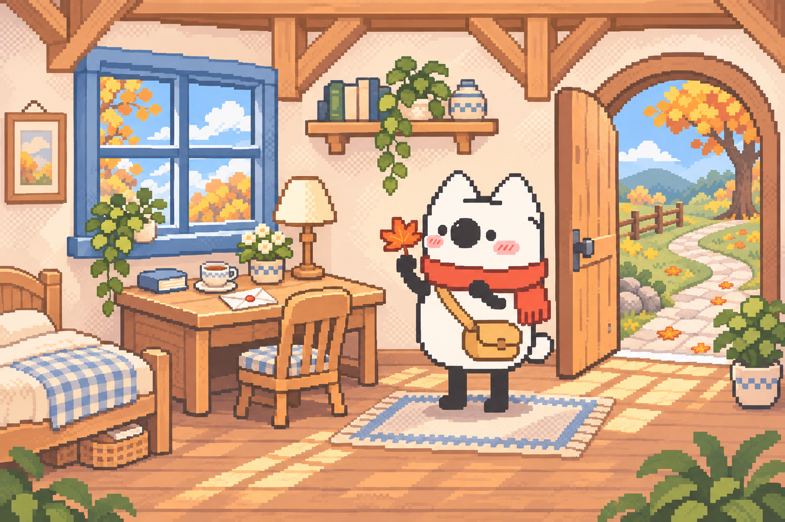
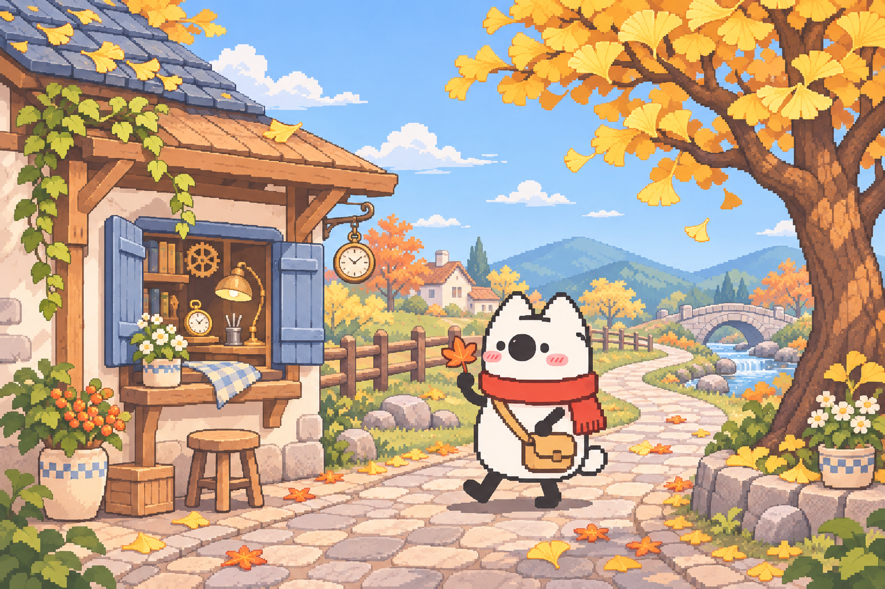

它带回的话
“巷子里那面墙红透了，只有靠窗那块还是绿的。”
归来分享 · 团队示例记录
它的日子，慢慢过。

它把一点秋天，带回了家。
“巷子里那面墙红透了，只有靠窗那块还是绿的。”
归来分享 · 团队示例记录
下次看到晾着的被子，拍一张给我。我老路过那些楼，看不出住的是谁，被子大概能看出来。不方便就算了。
可以不回应。这里不会催你。

整面墙都红透了，只有靠窗那一块还是绿的。
路边的风景 · 示例记录
巷子里那面墙红透了，只有靠窗那块还是绿的。
归来话为团队message示例；场景插画不等于发现原图。
trip_001 的四条发现均为团队预置示例。两条知乎内容不算本次真实获取，假原文链接不开放。真实接入后，live显示“刚从知乎看到”；24小时内的真实cache显示“几小时前看到的”，两者原文均应可点。浏览回看不会开始或结束出行。
朋友从路上，捎来一点见闻。
已到 · 正文未打开
这位是示例伙伴，由团队预置，不是真人养的
有东西在路上，还没到。收件伙伴下一次出行开始后，才会按规则到达。不提前展示未到正文，也不提供立即投递。
收件列表和滚动不会写线上已读。打开正文仅改变本次预览阅读状态。发件在路上不等于已到来信；已回应的礼物不提供第二次回应入口。